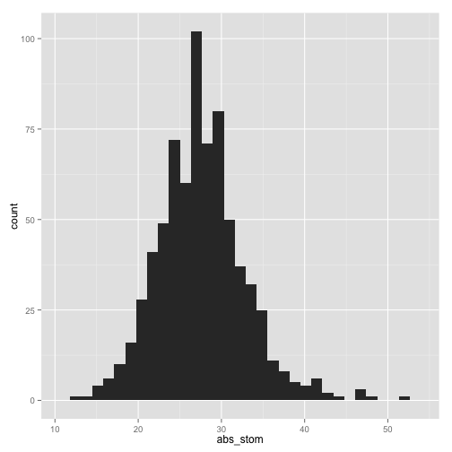
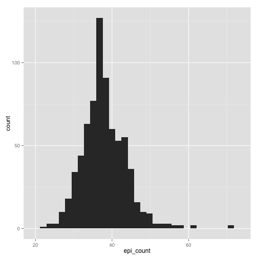
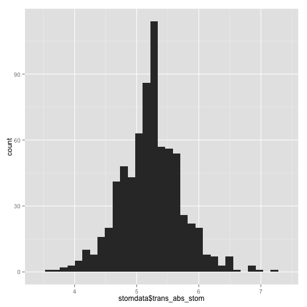
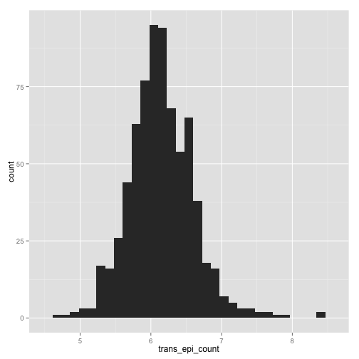

First we need to load in "packages" from our "library." Packages are groups of functions and code that the R community at large writes. They allow us to do specific things. If R doesn't have a function to do something you want, then feasibly you could write it yourself, but then share it with the community as a package.
To download and install a package, you can go to "Packages & Data", then select "Package Installer." Make sure "CRAN (binaries)" is selected. Then in the search bar type "lme4", as this is a package that we need to download. Hit "Get List". In the results you should see the "lme4" package. Select "lme4", and then below this window you should see a check-box "Install dependencies". Check the box, as this will also install any ancillary functions that lme4 requires to run. Also make sure that install location "At System Level (in R framework) is selected. Then select "Install Selected" and installation should proceed.
You should also download the packages "ggplot2" and "languageR" as you did for "lme4" above
Now, we are ready to "load in" the packages we will be using. To load in a package, we use the function library() and put as the argument the package we would like to load.
>
library(lme4)
>
library(ggplot2)
>
library(languageR)
Not only can we load in functions that others have written using packages and the library() function, but we can write our own functions in an R session itself. Below is a useful function written by Julin. We will use it later. But for now, let's make this function. The new function we will create is called "modelcheck". You can see that a new function is created with the "function" command. Select and execute the below to make the function modelcheck().
>
modelcheck <- function(model, h = 8, w = 10.5) {
## because plot(lmer.obj) doesn't work
rs <- residuals(model)
fv <- fitted(model)
quartz(h = h, w = w)
plot(rs ~ fv)
quartz(h = h, w = w)
plot(sqrt(abs(rs)) ~ fv)
quartz(h = h, w = w)
qqnorm(rs)
qqline(rs)
}
OK, now we are ready to load in the data that we will analyze. You can read in multiple file types into R, but today we will be loading in a .txt file using the read.table() function. The resulting dataframe will be called the object "data".
>
stomdata <- read.table("Modeling_example.txt", header = TRUE)
Lets just check the names of the columns, and check that everything is working OK with the function summary.
>
names(stomdata)
[1] "plant" "abs_stom" "epi_count" "il" "row" "tray"
[7] "col"
>
summary(stomdata)
plant abs_stom epi_count il row
A1 : 1 Min. :13.0 Min. :22.0 cvm82 : 27 B : 75
A2 : 1 1st Qu.:24.5 1st Qu.:34.5 IL_1.1.2: 10 D : 74
A20 : 1 Median :27.5 Median :37.5 IL_1.1.3: 10 E : 74
A22 : 1 Mean :27.6 Mean :38.0 IL_1.3 : 10 G : 74
A23 : 1 3rd Qu.:30.5 3rd Qu.:41.0 IL_1.4 : 10 I : 73
A24 : 1 Max. :52.5 Max. :71.0 IL_10.1 : 10 C : 72
(Other):721 (Other) :650 (Other):285
tray col
M : 50 A:149
E : 48 B:131
G : 48 C:147
J : 48 D:152
K : 48 E:148
B : 47
(Other):438
These are the exact types of traits that the tomato interns will be measuring this summer! Let's go over all the different factors in this dataframe, as displayed in the summary() results:
plant: an ID, a name for each individual. This is a "factor" in R, meaning that it is not treated as numerical data, which should make sense, because how would you mathematically treat "A1"? In summary() output is shown how many of each level of the factor is represented. Note that each individual is only represented once.
abs_stom: this is one of the traits we will analyze. It's short for "absolute somtata density on the adaxial side of the cotyledon". It is a count of stomata in a field of view of the microscope. For each individual, this number actually results as an average of two measurements for each individual. This is called "pseudoreplication", and in this case we just averaged the multiple measurements we took for an individual (although there are more sophisticated ways to deal with pseudoreplication). Note that abs_stom is treated numerically rather than a factor, and that in the output of summary we see the min and max values for this term, its median, and quartile values.
epi_count: this trait is very similar to "abs_stom", except that it is a count of the number of pavement cells in a field of view.
il: This is a factor that simply says which IL each individual was. Note that "cvm82", which stands for cultivar M82, is alphanumerically before all other ILs. This is important for modeling later, as all other ILs will be compared relative to M82.
row: This was the row in the tray that the individual plant was in in the lathouse from which epidermal impressions were made. It is a factor, with values "A"-"J"
tray: Which tray the individual comes from. There were trays "A" through "P"
col: This is a factor stating which column in the tray the individuals come from, "A" - "E"
The first step of modeling is to have a feel for your data. Ideally, we like our data to have parametric qualities, which means we make assumptions about the distribution of the trait. A distribution is simply the "spread" and "pattern" of values that you would obtain from a population after repeated measures. Very often, we like our data to be normal, which is a type of distribution that qualitatively looks like a bell curve. Let's see if our data fit this criteria. Additionally, it is ideal that the variance (a measure of the degree that data varies from a mean) in different levels of a factor is equivalent (this is called homoskedasticity, as opposed to heteroskedasticity)
Before getting too far, though, as much as we like our data to be normally distributed before modeling, in the real world, our data will be something similar to but not quite normal. Additionally, its not so important that the data itself is normal, but that the residuals resulting from the fitted model are normally distributed (although having normally distributed data usually helps this goal). Further, the models that we use are robust to deviations from normally distributed data. But still, let's make sure our data is "normally distributed".
Let's make a histrogram of of the abs_stom and epi_count traits using the function hist()
>
hist(stomdata$abs_stom)
>
hist(stomdata$epi_count)
Things look reasonably OK, although there seems to be a little of a "tail", or "skew" of the data towards the right. Personally, I plot everything in ggplot2, so let's make a more aethetic histogram to take a look at these distributions better using functions from the package ggplot2
>
qplot(abs_stom, data = stomdata, geom = "histogram")
stat_bin: binwidth defaulted to range/30. Use 'binwidth = x' to adjust
this.

>
qplot(epi_count, data = stomdata, geom = "histogram")
stat_bin: binwidth defaulted to range/30. Use 'binwidth = x' to adjust
this.

Certainly abs_stom looks more "normal" than epi_count, although it has a slight tail to the right. epi_count is definitely skewed to the right, and has a "shoulder" to the data on the right as well. Still, it has the characteristic bell-curved shape of a normal distribution.
Things are not always what they seem, though. Is there a way that we can better "see" if a distribution is normal? One of the best ways to visualize distributions is using a "QQ plot." A QQ plot compares two different distributions. In this case, we want to compare our distribution to what our data would look like if it were normally distributed. A QQ plot does this by plotting the actual quantiles of our data against the quantiles of our data if it had come from a normal distribution. We expect to see a staight, diagonal line (an x=y line) if our data is perfectly normal: deviations from a straight diagonal are proprotional to the degree that our data is not normal.
Execute together for a QQ plot of abs_stom
>
qqnorm(stomdata$abs_stom)
qqline(stomdata$abs_stom)
Execute together for a QQ plot of epi_count
>
qqnorm(stomdata$epi_count)
qqline(stomdata$epi_count)
In the QQ plots for both traits, you can see a "lift" towards the end of the QQ plot, towards the upper righthand corner, compared to a straight, diagonal line. If you remember from the histograms, these points reflect the "skew" towards the right, the right "tail", that we observe in the distributions.
One way to try to "make" your data normal is through transformation. All transformation is is the application of a mathematical function to "transform" your data. Our data is count data (meaning that it is just a "count" of how many things). A tranformation that often helps this sort of data is the square root function. Let's transform our traits by using the square root:
Transform abs_stom:
>
stomdata$trans_abs_stom <- sqrt(stomdata$abs_stom)
Transform epi_count:
>
stomdata$trans_epi_count <- sqrt(stomdata$epi_count)
Did it help? Let's look at the new histograms and QQ plots of our transformed traits:
trans_abs_stom histogram
>
qplot(stomdata$trans_abs_stom, data = stomdata, geom = "histogram")
stat_bin: binwidth defaulted to range/30. Use 'binwidth = x' to adjust
this.

trans_abs_stom QQ plot
>
qqnorm(stomdata$trans_abs_stom)
qqline(stomdata$trans_abs_stom)
trans_epi_count histogram
>
qplot(trans_epi_count, data = stomdata, geom = "histogram")
stat_bin: binwidth defaulted to range/30. Use 'binwidth = x' to adjust
this.
Warning: position_stack requires constant width: output may be incorrect

trans_epi_count QQ plot
>
qqnorm(stomdata$trans_epi_count)
qqline(stomdata$trans_epi_count)
Things certainly "look" better for trans_abs_stom. Maybe they look better for epi_count. It'd be nice if we could quantitatively determine if the transformed traits are more "normal" than the untransformed traits. Fortunately, there are statistical tests for normality, like the Shapiro-Wilk normality test. Let's try it.
The p-value states the probability that we would be wrong if we declared that our distribution is NOT normal. Let's compare the p-values for departures from normality for our untranformed and transformed traits:
>
shapiro.test(stomdata$abs_stom)
##
## Shapiro-Wilk normality test
##
## data: stomdata$abs_stom
## W = 0.977, p-value = 2.819e-09
>
shapiro.test(stomdata$trans_abs_stom)
##
## Shapiro-Wilk normality test
##
## data: stomdata$trans_abs_stom
## W = 0.9899, p-value = 6.482e-05
>
shapiro.test(stomdata$epi_count)
Shapiro-Wilk normality test
data: stomdata$epi_count
W = 0.9547, p-value = 3.637e-14
>
shapiro.test(stomdata$trans_epi_count)
Shapiro-Wilk normality test
data: stomdata$trans_epi_count
W = 0.9767, p-value = 2.323e-09
By transforming our data with a square root function, the p-values change by a magnitude of 10^4! Certainly transforming our traits makes them more closely approximate a normal distribution! We should use transformed traits from here on out. Note that, still, the trans_epi_count trait is not as normal as we would like. We do our best to try to make things normal before proceeding. Maybe you can try different mathematical transforms to see if you can make the epi_count trait even more normal! Also, again bear in mind that we are most concerned with a normal distribution of residuals AFTER modeling, so maybe our epi_count transformation isn't so bad. Let's see in the next section about modeling.
We will be using mixed effect linear models to model our traits. These are very much like ANOVA ("ANalysis Of VAriance"), but are called "mixed effect" models because effects can either be "fixed" or "random" effects. Trying to decide whether a term should be fixed or random can be sometimes ambiguous and complicated, but let me try my best to explain what each is below.
FIXED EFFECTS are often the things we are trying to measure. For example, here we are trying to measure differences in the introgression lines (ILs) relative to cvM82, so "il" might be a fixed effect. Another way to think of fixed effects is that they aren't randomly selected from another distribution. In our case, the ILs we are measuring are not drawn from a random population: these are very specific lines that were created for a very specific purpose in a non-random fashion. Finally, another hallmark of a fixed effect is that they are usually not extrapolatable or generalizble: for example, it is not as if our estimation of IL values can be extrapolated to a general population of IL. Again, this gets back to that they are not randomly selected from a population.
RANDOM EFFECTS are often just that . . . the result of "random", "incidental" effects. Random effects are often measured "at random" from a larger distribution. They are often the things we don't want to measure but still affect the value of our traits. In this case, random effects are the "tray" that the plant comes from, and its positional information such as "row" and "col"
We are using the "lme4" package to do our mixed-effect linear models. The function we use to do our mixed-effect linear models is "lmer". Writing out a model is fairly easy! It takes the form of trait ~ fixed_effect1 + fixed_effect2 + (1|rand_effect1) + (1|rand_effect2). You should read "~" as "as a function of." Notice that the fixed effects DON'T have brackets. Also notice that the random effects are both in parentheses and are proceeded by "1|". The "1|" means that the random effect is considered individually. The "|" character means "given" or "by" and the "1" can be replaced with another factor we would like to analyze the random effect in relation to. Interaction effects can also be specified by colons ":". Interactions and groupings in mixed effect models can get quite complicated, and this dataset doesn't deal with them. Consult a real statistician for more complicated modeling of interactions used mixed effect linear models!
OK, now we are ready to write a mixed-effect linear model. There are some rules about models, and one is that we should not include factors in our model that do not significantly explain the variance in our data. If we include such terms, we run the risk of "over-fitting" our data. Overfit data is less extapolatable to the phenomenon we are trying to describe, and extrapolatability is in many ways the entire reason we are trying to model in the first place: we are trying to estimate underlying parameters that are obscured by variability of repeated measures.
One way to select your model is to begin with the "max model" and remove terms that are not significant. The maximum model includes all possible factors that you might consider. You then remove factors, one by one, compare models with and without the factor of interest, and determine if the factor is significant or not and should be removed. This is called "backwards selection."
Let's write the max model for trans_abs_stom.
>
model1 <- lmer(stomdata$trans_abs_stom ~ stomdata$il + (1 | stomdata$tray) +
(1 | stomdata$row) + (1 | stomdata$col))
Now, let's write a model removing just the last term (1|stomdata$col). There is a nice function called update() that you can look into that facilitates this process of removing terms and comparing models, but it is not used here
>
model2 <- lmer(stomdata$trans_abs_stom ~ stomdata$il + (1 | stomdata$tray) +
(1 | stomdata$row))
Now that we have two models, only differing by the single term (1|stomdata$col), we can compare the ability of the models to explain the variance in our data using the anova() function. If removing a term significantly impacts the ability of a model to explain our data, then that term is significant and should remain in our model.
>
anova(model1, model2)
Data:
Models:
model2: stomdata$trans_abs_stom ~ stomdata$il + (1 | stomdata$tray) +
model2: (1 | stomdata$row)
model1: stomdata$trans_abs_stom ~ stomdata$il + (1 | stomdata$tray) +
model1: (1 | stomdata$row) + (1 | stomdata$col)
Df AIC BIC logLik Chisq Chi Df Pr(>Chisq)
model2 78 915 1273 -379
model1 79 913 1275 -377 3.98 1 0.046 *
---
Signif. codes: 0 '***' 0.001 '**' 0.01 '*' 0.05 '.' 0.1 ' ' 1
Just barely, (1|stomdata$col) significantly explains our data at p = 0.046. For now, it should remain.
Let's remove other terms one by one from model1. Next is (1|stomdata$row):
>
model3 <- lmer(stomdata$trans_abs_stom ~ stomdata$il + (1 | stomdata$tray) +
(1 | stomdata$col))
anova(model1, model3)
Data:
Models:
model3: stomdata$trans_abs_stom ~ stomdata$il + (1 | stomdata$tray) +
model3: (1 | stomdata$col)
model1: stomdata$trans_abs_stom ~ stomdata$il + (1 | stomdata$tray) +
model1: (1 | stomdata$row) + (1 | stomdata$col)
Df AIC BIC logLik Chisq Chi Df Pr(>Chisq)
model3 78 925 1283 -385
model1 79 913 1275 -377 14.3 1 0.00016 ***
---
Signif. codes: 0 '***' 0.001 '**' 0.01 '*' 0.05 '.' 0.1 ' ' 1
the p value of dropping the term (1|stomdata$row) is 0.000156
Let's remove (1|stomdata$tray) from model1:
>
model4 <- lmer(stomdata$trans_abs_stom ~ stomdata$il + (1 | stomdata$row) +
(1 | stomdata$col))
>
anova(model1, model4)
Data:
Models:
model4: stomdata$trans_abs_stom ~ stomdata$il + (1 | stomdata$row) +
model4: (1 | stomdata$col)
model1: stomdata$trans_abs_stom ~ stomdata$il + (1 | stomdata$tray) +
model1: (1 | stomdata$row) + (1 | stomdata$col)
Df AIC BIC logLik Chisq Chi Df Pr(>Chisq)
model4 78 974 1332 -409
model1 79 913 1275 -377 63 1 2.1e-15 ***
---
Signif. codes: 0 '***' 0.001 '**' 0.01 '*' 0.05 '.' 0.1 ' ' 1
the p value of dropping the term (1|stomdata$tray) is 2.08x10^-15
Finally, let's remove the il term:
>
model5 <- lmer(stomdata$trans_abs_stom ~ (1 | stomdata$tray) + (1 | stomdata$row) +
(1 | stomdata$col))
>
anova(model1, model5)
Data:
Models:
model5: stomdata$trans_abs_stom ~ (1 | stomdata$tray) + (1 | stomdata$row) +
model5: (1 | stomdata$col)
model1: stomdata$trans_abs_stom ~ stomdata$il + (1 | stomdata$tray) +
model1: (1 | stomdata$row) + (1 | stomdata$col)
Df AIC BIC logLik Chisq Chi Df Pr(>Chisq)
model5 5 985 1008 -487
model1 79 913 1275 -377 220 74 <2e-16 ***
---
Signif. codes: 0 '***' 0.001 '**' 0.01 '*' 0.05 '.' 0.1 ' ' 1
the p vlaue of dropping the term il is <2.2 x 10^-16. Note that il is the most significant term in our model. This is good! It means the effect we are trying to measure, il, explains the variance in our data to a much larger degree than the other things we are not interested in. However, "tray" has a VERY large effect as well. Tray effects are usually caused by differences in watering and/or position, and demonstrate how susceptible the cellular traits we are measuring are to enviornemntal influences.
Let's recap the significance of each term in our model from the model comparisons that we just performed:
il: p < 2.2 x 10^-16
(1|stomdata$tray): p = 2.08 x 10^-15
(1|stomdata$row): p = 0.000156
(1|stomdata$col): p = 0.046
Every one of the factors we had included in our max model is significant! Therefore, all of these factors should remain in our model. The "minimal" model, also called the "final" model, is the one that only includes ONLY significant terms. So, in this case, our max model is our min model. Most the time, there will be some non-significant terms in the max model. So there are a few more points to make about model selection.
If a non-significant term had been found in the first round of selection, or multiple non-significant terms discovered, we would have removed the most non-significant term. If there was a tie of "most non-significant", we would have to make a choice to remove a single non-significant term. Then, starting with a model with one less significant term, we would proceed through model selection again removing each term one-by-one. We would proceed through this until there were no more non-significant terms.
If we had removed non-significant terms, then the minimal model would have fewer terms than the max model. Another form of model selection you can do in this case is called "forward" selection. In forward selection, instead of beginning with the maximal model, you begin with the minimum model, and you add terms back one-by-one, comparing models with one additional term or not. This is a good way to "double check" the significance of the terms determined from backwards selection (or rather, all the removed terms should remain not significant when added back to the minimal model).
Why do we go to all this trouble of backwards and forwards selection, removing or adding terms only one at a time? The reason is because the ability of a term in a model to explain variance in the data is dependent upon other terms in the model. That is, removing terms in different orders and comparing models with give you different significance values! This is why backwards selection removes each term after the other before deciding whether or not to remove a term at all. Model selection can be a tricky process! Know your data well, explore the effects of removing things in different orders, and everything will be fine.
Finally, after creating our final, minimal model, we should check how well our model fits to our data. That is, how far off is our model from the actual data in general? When asking this question, the key point is that certain groups or levels of data are not less explained by the model than others. Overall, the residuals, or the difference between the actual data from the model-fitted, predicted values of the data, should be normally distributed and show no biases. Julin's function that we created at the beginning of the tutorial, "modelcheck()", is designed to allow us to consider these aspects of the model.
Execute the function modelcheck() for our final, minimal model, model1:
modelcheck(model1)
Three plots should come up. The first two plot fitted values, which are the values predicted by the model, against the residuals or the square of the residuals. Ideally, there should be no biases in the residuals based on the value of the fitted values. There is a slight tendancy for the residuals to be greater in value the less extreme the fitted value, but this relationship is abolished when looking at the square root of the absolute value of residuals. Maybe the more telling graph is the QQ plot, which again compares the actual distribution of residuals to their distribution had the data been truly normal. Except for some outliers at the extremes, the residuals appear rather normal. The model seems to have no particular biases in its ability to explain particular trait values (except for a handful of extreme values).
One of the best reasons to model data is to obtain the fitted values and estimates of the values we are trying to measure. In our case, we are interested in measuring the trait values of different ILs. Modeled values give us "ideal", "estimated" values of traits for ILs, if we sufficiently estimated the effects of other sources of systematic bias. To find the estimated IL trait values, simply use the summary() function:
summary(model1)
Looking under "Fixed effects", which refers to "il" in our case, you can find the estimated trait values for each IL. Remember, we puposefully made cvM82 first alphabetically. The result is that all ILs are compared back to M82. M82 is the "default", and everything else is measured as a change relative to it. Because we are dealing with linear models, M82 literally becomes an intercept, and the "(Intercept) Estimate" is the model fitted trait value for M82. The model predicts that the trans_abs_stom value for M82 is 5.3. Remember, this is a square root transformed value, so the actual trait value for M82 is (5.3)^2. The other ILs have much smaller estimated values than this, by magnitudes. This is because these values represent the DIFFERENCE between the estimated IL value with the intercept/M82. For instance, the predicted transformed trait value for IL1.1 is 5.3 + 3.3x10^-2. The predicted transformed trait value for IL1.1.3 is 5.3-1.3x10^-1.
What if we wanted to ask the question "what is the p value that a particular IL has a different trait value than M82?" This is a complicated question to address in mixed-effect linear models. So complicated, in fact, that people have written an entire package to help address this question . . . the languageR package (which was pointed out to me originally by DanF and Julin). I had some issues using languageR that had to do with the compatibility of the version of R I was using and the version of languageR. You can try to use languageR at your own risk! Hopefully whatever troubles were plaguing me will not hinder you. At this moment (and languageR is currently working for me) I am using R version 2.13.1 (which is very out of date but I keep to use languageR) and languageR version 1.2 (which is also out of date). To retrieve pvalues using languageR, execute the function below (it takes a little while to run):
>
sepi_count_final_pvals <- pvals.fnc(model1, addPlot = FALSE, ndigits = 16)
>
sepi_count_final_pvals$fixed
Estimate MCMCmean
(Intercept) 5.318240518378360981 5.31830579909468781
stomdata$ilIL_1.1 0.033191068604208097 0.03085489304300360
stomdata$ilIL_1.1.2 0.156384370880258805 0.15501421043208560
stomdata$ilIL_1.1.3 -0.126083709275166100 -0.12481529313924400
stomdata$ilIL_1.2 0.003672159229793400 0.00485570923378660
stomdata$ilIL_1.3 -0.129912597780942995 -0.12947197350648401
stomdata$ilIL_1.4 -0.084293449374248805 -0.08212840792185620
stomdata$ilIL_1.4.18 0.142238219043543612 0.14330288210784589
stomdata$ilIL_10.1 -0.040691342398088103 -0.04287067021908950
stomdata$ilIL_10.1.1 -0.102412739884883003 -0.10368487196189620
stomdata$ilIL_10.2 0.349222203208308990 0.34819240468737911
stomdata$ilIL_10.2.2 -0.009500782218636501 -0.01128294916681180
stomdata$ilIL_10.3 -0.717580714485289706 -0.71820341384410380
stomdata$ilIL_11.1 0.045138011153469701 0.04361531397607390
stomdata$ilIL_11.2 -0.150184053361484993 -0.15020620076489630
stomdata$ilIL_11.3 -0.116055532034416695 -0.11507864925636280
stomdata$ilIL_11.4 -0.210639598914547393 -0.20900745287222780
stomdata$ilIL_11.4.1 -0.195999955197983605 -0.19652208265346821
stomdata$ilIL_12.1 -0.018805245804371502 -0.01893264064525680
stomdata$ilIL_12.1.1 0.026055854460878800 0.02516135890624480
stomdata$ilIL_12.2 -0.122358836554985598 -0.12502103927393371
stomdata$ilIL_12.3 -0.027300965943409999 -0.02570419776691270
stomdata$ilIL_12.3.1 0.066380621913327900 0.06944296433000210
stomdata$ilIL_12.4 -0.090457282448152404 -0.09199119284612710
stomdata$ilIL_12.4.1 -0.118460521887305395 -0.11883288194676830
stomdata$ilIL_2.1 -0.032120165260409998 -0.03338212678418240
stomdata$ilIL_2.1.1 0.027855057484727101 0.02169686863854710
stomdata$ilIL_2.2 -0.150596019200194692 -0.15134978562611789
stomdata$ilIL_2.3 -0.133633036353965007 -0.13565605353477320
stomdata$ilIL_2.4 -0.135606354507809695 -0.13657830085590861
stomdata$ilIL_2.5 -0.575232333228880566 -0.57323357091704807
stomdata$ilIL_2.6 -0.219899367302083204 -0.21979261841726150
stomdata$ilIL_2.6.5 0.046041936270420199 0.04729663469246410
stomdata$ilIL_3.1 -0.149582777062681110 -0.14922653626348220
stomdata$ilIL_3.2 -0.290304665266264805 -0.29194122170828601
stomdata$ilIL_3.3 -0.000087364054909100 -0.00125616997925910
stomdata$ilIL_3.4 -0.010292798507420400 -0.01112619515242630
stomdata$ilIL_3.5 0.552691007033873305 0.54982874069932375
stomdata$ilIL_4.1 0.115704984295816896 0.11329828895682210
stomdata$ilIL_4.1.1 -0.427879961320659197 -0.42543019594394560
stomdata$ilIL_4.2 -0.013600927753339501 -0.01421126126711960
stomdata$ilIL_4.3 0.050609276672573103 0.04890572013808790
stomdata$ilIL_4.3.2 -0.525718372552140378 -0.52551254203878339
stomdata$ilIL_4.4 0.113307840816777194 0.10983585175185490
stomdata$ilIL_5.1 -0.030518718988379601 -0.03156936214860060
stomdata$ilIL_5.2 -0.184632946398329001 -0.18418876100223461
stomdata$ilIL_5.3 -0.350238041958747193 -0.35091345163490462
stomdata$ilIL_5.4 0.027494590771854500 0.02385490538162990
stomdata$ilIL_5.5 -0.278961770404061782 -0.27818345173883119
stomdata$ilIL_6.1 -0.503952286038331643 -0.50152007893917916
stomdata$ilIL_6.2 0.026912364783957601 0.02611935666037610
stomdata$ilIL_6.3 0.053150857119711903 0.05311015199308390
stomdata$ilIL_6.4 -0.348188012863203777 -0.34856813871069742
stomdata$ilIL_7.1 -0.394258177148415101 -0.39596581842211748
stomdata$ilIL_7.2 -0.129290358676921013 -0.12773362759540460
stomdata$ilIL_7.3 -0.068772313327962700 -0.06986765180671881
stomdata$ilIL_7.4.1 -0.005310963379414700 -0.00324138288725560
stomdata$ilIL_7.5 0.073256220658193594 0.07174974211999240
stomdata$ilIL_7.5.5 -0.080231529072299496 -0.08054395694860091
stomdata$ilIL_8.1 0.066603115642920305 0.06899248837739300
stomdata$ilIL_8.1.1 -0.221407844712663893 -0.22228051455646000
stomdata$ilIL_8.1.5 0.288240813362119597 0.28771116926390361
stomdata$ilIL_8.2 0.256139068655845625 0.25683836692310519
stomdata$ilIL_8.2.1 0.446227618630104517 0.44615147139337269
stomdata$ilIL_8.3 -0.300591286849386519 -0.29948731046141369
stomdata$ilIL_8.3.1 -0.425631880830228182 -0.42606927620277529
stomdata$ilIL_9.1 -0.503803423455580268 -0.50653259296870157
stomdata$ilIL_9.1.2 0.047750786047383101 0.04903205152026780
stomdata$ilIL_9.1.3 -0.146729629260628103 -0.14654846532162361
stomdata$ilIL_9.2 0.405335013049690773 0.40532166815922238
stomdata$ilIL_9.2.5 0.172567256916148798 0.17369294240109140
stomdata$ilIL_9.2.6 -0.185276236277545109 -0.18481789062596130
stomdata$ilIL_9.3 -0.603071140064898703 -0.60228672876128408
stomdata$ilIL_9.3.1 -0.418415029480450618 -0.41740110641369149
stomdata$ilIL_9.3.2 -0.252110606708431995 -0.25464309731163021
HPD95lower HPD95upper
(Intercept) 5.1116804205848876 5.52396107615281551
stomdata$ilIL_1.1 -0.2954461519009432 0.35378016225249920
stomdata$ilIL_1.1.2 -0.1456615408716991 0.47175435177166908
stomdata$ilIL_1.1.3 -0.4341903437090308 0.17305125069349661
stomdata$ilIL_1.2 -0.3171510786277054 0.33462514953631362
stomdata$ilIL_1.3 -0.4353543123593794 0.18298687829227611
stomdata$ilIL_1.4 -0.3955513247375636 0.22334639811898460
stomdata$ilIL_1.4.18 -0.1932795776930436 0.47657661646812510
stomdata$ilIL_10.1 -0.3387678616143362 0.26431966018361008
stomdata$ilIL_10.1.1 -0.4318182635206104 0.19618948385034890
stomdata$ilIL_10.2 0.0299089978418273 0.66346346536020318
stomdata$ilIL_10.2.2 -0.3103497618731824 0.30188909505654082
stomdata$ilIL_10.3 -1.0227967065974193 -0.40695125302191337
stomdata$ilIL_11.1 -0.2514464555945484 0.35711256240259481
stomdata$ilIL_11.2 -0.4786285223676741 0.15112403023282950
stomdata$ilIL_11.3 -0.4382613624438293 0.20231137569326241
stomdata$ilIL_11.4 -0.5224003668555280 0.11424260755301470
stomdata$ilIL_11.4.1 -0.4983789026144791 0.10267502172243520
stomdata$ilIL_12.1 -0.3490266913842880 0.28506470622900443
stomdata$ilIL_12.1.1 -0.2829604365016884 0.32357981255487900
stomdata$ilIL_12.2 -0.4285003924892150 0.19013401093883989
stomdata$ilIL_12.3 -0.3147015003822294 0.28796481946618918
stomdata$ilIL_12.3.1 -0.2255532624018228 0.37655200393891258
stomdata$ilIL_12.4 -0.4078871569292230 0.22446420898749961
stomdata$ilIL_12.4.1 -0.4282997235407498 0.19886923822039099
stomdata$ilIL_2.1 -0.3705238542501404 0.29130024166956342
stomdata$ilIL_2.1.1 -0.5797806517293593 0.63261659811811632
stomdata$ilIL_2.2 -0.4830161833938026 0.19113895507972589
stomdata$ilIL_2.3 -0.4371413343266252 0.19406677984796619
stomdata$ilIL_2.4 -0.4407218413259066 0.19311930705719990
stomdata$ilIL_2.5 -0.8885393626550318 -0.25545503651751861
stomdata$ilIL_2.6 -0.5280199017194106 0.07726413630243099
stomdata$ilIL_2.6.5 -0.2697472930952582 0.36395192439891361
stomdata$ilIL_3.1 -0.4576475977827414 0.16220202081424970
stomdata$ilIL_3.2 -0.5978700796618888 0.02027182327525600
stomdata$ilIL_3.3 -0.3052709977703146 0.30897005132046879
stomdata$ilIL_3.4 -0.3160137706949411 0.30330752039433800
stomdata$ilIL_3.5 0.2311171409837358 0.85586077502041291
stomdata$ilIL_4.1 -0.1899839910162659 0.41619560311283421
stomdata$ilIL_4.1.1 -0.7468379133408728 -0.11273660212400140
stomdata$ilIL_4.2 -0.3253173596956757 0.29337753545879502
stomdata$ilIL_4.3 -0.2805678354110976 0.38293883248259891
stomdata$ilIL_4.3.2 -0.8189954137569974 -0.21671071173764231
stomdata$ilIL_4.4 -0.2063740996393912 0.41201227444566157
stomdata$ilIL_5.1 -0.3347358144672964 0.27058691555948061
stomdata$ilIL_5.2 -0.5000473806175880 0.12591736570568229
stomdata$ilIL_5.3 -0.6672943413871237 -0.05689266059031590
stomdata$ilIL_5.4 -0.2957989872109338 0.34356075179431600
stomdata$ilIL_5.5 -0.5938874989707663 0.02973122426958660
stomdata$ilIL_6.1 -0.8249545435333803 -0.20668090207814599
stomdata$ilIL_6.2 -0.2721363128577104 0.33557503409755840
stomdata$ilIL_6.3 -0.2514433183636169 0.36127062866234982
stomdata$ilIL_6.4 -0.6506635617278980 -0.03941119751895620
stomdata$ilIL_7.1 -0.6960469509490987 -0.08936048494887960
stomdata$ilIL_7.2 -0.4292733812729728 0.17196142311247919
stomdata$ilIL_7.3 -0.3936178380403372 0.22611003610344879
stomdata$ilIL_7.4.1 -0.3114078774669660 0.29730974983728659
stomdata$ilIL_7.5 -0.2470049837472148 0.36504565671715861
stomdata$ilIL_7.5.5 -0.3945868292970754 0.21921979042417380
stomdata$ilIL_8.1 -0.2306224239964358 0.38034859630657841
stomdata$ilIL_8.1.1 -0.5133681218134301 0.09203742049590040
stomdata$ilIL_8.1.5 -0.0289415541496130 0.58107616810920004
stomdata$ilIL_8.2 -0.0502901289082972 0.55157863581003364
stomdata$ilIL_8.2.1 0.1497045686857718 0.75383511748831655
stomdata$ilIL_8.3 -0.6062725532975286 0.00677679695059700
stomdata$ilIL_8.3.1 -0.7458943229831048 -0.13680266328077800
stomdata$ilIL_9.1 -0.8121364772498418 -0.20187375218331821
stomdata$ilIL_9.1.2 -0.2669971077529646 0.36965211619101601
stomdata$ilIL_9.1.3 -0.4432604404525440 0.17194997580831289
stomdata$ilIL_9.2 0.1125647459107047 0.71045570375004308
stomdata$ilIL_9.2.5 -0.1527170335860924 0.52506929698155491
stomdata$ilIL_9.2.6 -0.4788795612519148 0.12592172132187471
stomdata$ilIL_9.3 -0.8945032630647614 -0.28600953990046168
stomdata$ilIL_9.3.1 -0.7547733928593974 -0.08012011393243811
stomdata$ilIL_9.3.2 -0.5663891253709805 0.05043747094719460
pMCMC Pr(>|t|)
(Intercept) 0.0001000000000000000 0.000000000000000000
stomdata$ilIL_1.1 0.8648000000000000131 0.838269012869608199
stomdata$ilIL_1.1.2 0.3260000000000000120 0.316014451937916385
stomdata$ilIL_1.1.3 0.4228000000000000091 0.417254502472039324
stomdata$ilIL_1.2 0.9799999999999999822 0.982629873458521041
stomdata$ilIL_1.3 0.4077999999999999958 0.404691829548102400
stomdata$ilIL_1.4 0.5907999999999999918 0.589387652405685358
stomdata$ilIL_1.4.18 0.4037999999999999923 0.403401699822637294
stomdata$ilIL_10.1 0.7830000000000000293 0.793338943037925404
stomdata$ilIL_10.1.1 0.5110000000000000098 0.526445634274171237
stomdata$ilIL_10.2 0.0291999999999998996 0.031195745125293599
stomdata$ilIL_10.2.2 0.9402000000000000357 0.951043696287889651
stomdata$ilIL_10.3 0.0001000000000000000 0.000004683842508700
stomdata$ilIL_11.1 0.7769999999999999130 0.773269902995078473
stomdata$ilIL_11.2 0.3585999999999999743 0.352049411580070581
stomdata$ilIL_11.3 0.4783999999999999919 0.474502476098093984
stomdata$ilIL_11.4 0.1942000000000000115 0.196583393665135608
stomdata$ilIL_11.4.1 0.2021999999999999909 0.209401887316028407
stomdata$ilIL_12.1 0.9080000000000000293 0.907323776609342048
stomdata$ilIL_12.1.1 0.8668000000000000149 0.867013939149604340
stomdata$ilIL_12.2 0.4284000000000000030 0.432718751035651994
stomdata$ilIL_12.3 0.8693999999999999506 0.860111758684936945
stomdata$ilIL_12.3.1 0.6519999999999999130 0.669582726754166968
stomdata$ilIL_12.4 0.5777999999999999803 0.575013813225515591
stomdata$ilIL_12.4.1 0.4712000000000000077 0.464142238011191921
stomdata$ilIL_2.1 0.8409999999999999698 0.849466258970273502
stomdata$ilIL_2.1.1 0.9466000000000002190 0.928227430159738187
stomdata$ilIL_2.2 0.3754000000000000115 0.375118193944353973
stomdata$ilIL_2.3 0.4016000000000000125 0.411507306285480823
stomdata$ilIL_2.4 0.3993999999999999773 0.404201479068683589
stomdata$ilIL_2.5 0.0002000000000000000 0.000417070164223000
stomdata$ilIL_2.6 0.1585999999999999910 0.158049739647431409
stomdata$ilIL_2.6.5 0.7802000000000000046 0.776288531332485210
stomdata$ilIL_3.1 0.3483999999999999875 0.335306178694555479
stomdata$ilIL_3.2 0.0664000000000000007 0.063891575624642094
stomdata$ilIL_3.3 0.9868000000000000105 0.999551786050730251
stomdata$ilIL_3.4 0.9432000000000000384 0.947258236450194580
stomdata$ilIL_3.5 0.0009999999999999001 0.000654538685202600
stomdata$ilIL_4.1 0.4677999999999999936 0.459980576175769984
stomdata$ilIL_4.1.1 0.0103999999999999995 0.008660745031210801
stomdata$ilIL_4.2 0.9312000000000000277 0.930815908210452014
stomdata$ilIL_4.3 0.7816000000000000725 0.764646153337956491
stomdata$ilIL_4.3.2 0.0005999999999999999 0.000789553983396200
stomdata$ilIL_4.4 0.4865999999999999215 0.466323726164508623
stomdata$ilIL_5.1 0.8362000000000000544 0.843864796566281328
stomdata$ilIL_5.2 0.2464000000000000079 0.253193692562561801
stomdata$ilIL_5.3 0.0253999999999999990 0.025110920168320200
stomdata$ilIL_5.4 0.8850000000000000089 0.865430123700738019
stomdata$ilIL_5.5 0.0807999999999999968 0.073644599216879006
stomdata$ilIL_6.1 0.0014000000000000000 0.001299044110805200
stomdata$ilIL_6.2 0.8640000000000001013 0.862780164448604392
stomdata$ilIL_6.3 0.7330000000000000959 0.733362306888196924
stomdata$ilIL_6.4 0.0280000000000000006 0.026696298211983799
stomdata$ilIL_7.1 0.0117999999999999997 0.011251552961440300
stomdata$ilIL_7.2 0.4082000000000000073 0.405315142322858202
stomdata$ilIL_7.3 0.6605999999999999650 0.659693052612759567
stomdata$ilIL_7.4.1 0.9809999999999999831 0.972812503508729054
stomdata$ilIL_7.5 0.6532000000000000028 0.637454419973611630
stomdata$ilIL_7.5.5 0.6099999999999999867 0.606037425809889951
stomdata$ilIL_8.1 0.6541999999999998927 0.669696907115268303
stomdata$ilIL_8.1.1 0.1574000000000000121 0.154208355324918001
stomdata$ilIL_8.1.5 0.0646000000000000046 0.063641875698598402
stomdata$ilIL_8.2 0.0942000000000001031 0.099415241271177304
stomdata$ilIL_8.2.1 0.0045999999999999002 0.004158869420552800
stomdata$ilIL_8.3 0.0584000000000000005 0.054434686208379802
stomdata$ilIL_8.3.1 0.0051999999999999998 0.006263751827047600
stomdata$ilIL_9.1 0.0004000000000000000 0.001238341264992100
stomdata$ilIL_9.1.2 0.7558000000000000274 0.768833702715043144
stomdata$ilIL_9.1.3 0.3420000000000000262 0.345791194257093204
stomdata$ilIL_9.2 0.0102000000000000007 0.009498920174402899
stomdata$ilIL_9.2.5 0.3038000000000000145 0.307964036418191922
stomdata$ilIL_9.2.6 0.2427999999999999881 0.234856284802581000
stomdata$ilIL_9.3 0.0001000000000000000 0.000123198657424200
stomdata$ilIL_9.3.1 0.0176000000000000011 0.013658752001193300
stomdata$ilIL_9.3.2 0.1042000000000000010 0.104702648101013804
Given are p-values, which should be interpreted as the p-value for the difference between each IL's trait value from that of M82. If we detect a significant difference between the trait of an IL relative to M82, it suggests that the genetic cause of that trait difference must lie within the introgressed region of the IL.
OK, that's it. There is still one more trait for you to try the whole process yourself with: epi_count.
To review, some major steps of fitting models include:
Good luck! Model fitting is usually much more complicated than presented here, so seek out help on the internet and from experience statisticians!